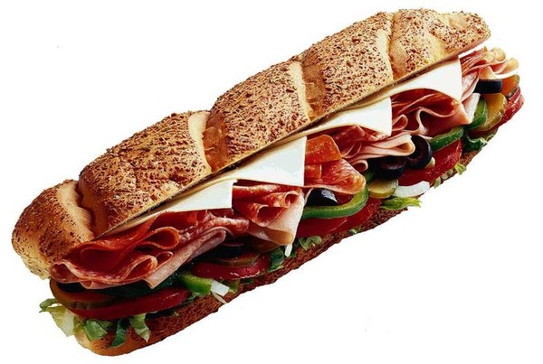

Part-Time Job
What i want to do as a part-time job is work at subway because i like there food and the subway which i hope has an opening is not along time away from my house and i like there food becsaue you dont normally get alot of the Idiotic Creeps at Mcds
and Tacobell and the "fast food" places, I have heard that working in Subway is a good first job by how you are not working with many people at the most your working with 2 more people which is a Partner and a Manager